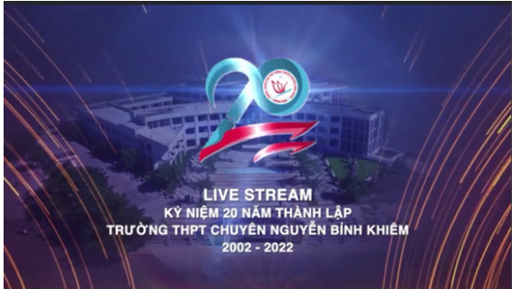
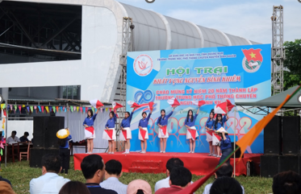
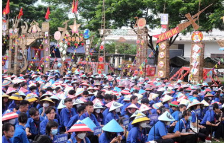
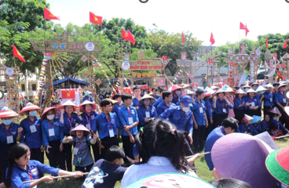

HỘI TRẠI KHÁT VỌNG NGUYỄN BỈNH KHIÊM - CHÀO MỪNG KỶ NIỆM 20 NĂM THÀNH LẬP TRƯỜNG THPT CHUYÊN NGUYỄN BỈNH KHIÊM, QUẢNG NAM

Lần cập nhật cuối lúc Thứ sáu, 16 Tháng 6 2023 17:05 Viết bởi Administrator Thứ ba, 06 Tháng 9 2022 22:53
HỘI TRẠI KHÁT VỌNG NGUYỄN BỈNH KHIÊM - CHÀO MỪNG KỶ NIỆM 20 NĂM THÀNH LẬP TRƯỜNG THPT CHUYÊN NGUYỄN BỈNH KHIÊM, QUẢNG NAM
Mới đó mà đã gần 20 mùa xuân qua kể từ khi ngôi trường thân yêu mang tên Nhà văn hoá lớn của dân tộc – Trạng Trình Nguyễn Bỉnh Khiêm được thành lập và đi vào hoạt động. Đó là khoảng thời gian chưa phải là dài nhưng cũng đủ để trường THPT Chuyên Nguyễn Bỉnh Khiêm ghi dấu ấn, khẳng định vị thế của mình trong hệ thống các trường THPT Chuyên toàn quốc.

Ngày 03/09/2022, tại Chuyên Nguyễn Bỉnh Khiêm nô nức khai mạc hội trại “KHÁT VỌNG NGUYỄN BỈNH KHIÊM” – Chào mừng kỷ niệm 20 năm thành lập trường. Rộn ràng, náo nhiệt và tràn đầy sức trẻ - đó là những gì mà học sinh NBK mang đến qua các hoạt động của hội trại.



- 14/12/2022 22:53 - CHỦ NHẬT XANH
- 26/11/2022 20:17 - KẾT NỐI CÁC TRƯỜNG ĐẠI HỌC NƯỚC NGOÀI – CƠ HỘI DU …
- 19/11/2022 19:16 - CHI ĐOÀN GIÁO VIÊN VỚI HỘI THI GIÁO VIÊN GIỎI (19/…
- 29/10/2022 20:10 - ĐẠI HỘI ĐOÀN TRƯỜNG THPT CHUYÊN NGUYỄN BỈNH KHIÊM …
- 10/09/2022 19:42 - KHÔNG GIAN ĐỌC – SÁCH VỚI ĐOÀN VIÊN THANH NIÊN (10…
- 09/06/2022 07:30 - Link bài hát trên Cổng thông tin Trung ương Đoàn T…
- 31/05/2022 09:41 - Đoàn trường tổ chức khen thưởng học sinh 3 tốt cấp…
- 27/05/2022 10:44 - Kết quả thực hiện chương trình 5 ngày tình nguyện …
- 25/05/2022 07:15 - Đoàn trường với hoạt động trang bị kĩ năng thực hà…
- 24/05/2022 17:06 - Đoàn trường với hoạt động tư vấn hướng nghiệp Năm …